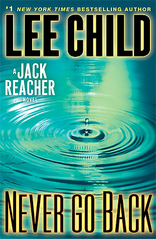
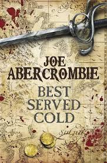
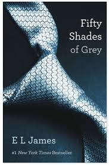
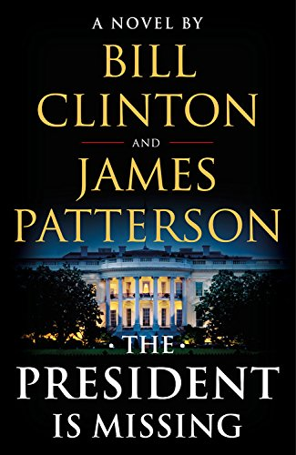
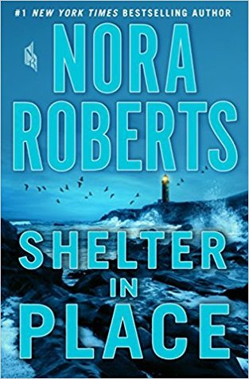
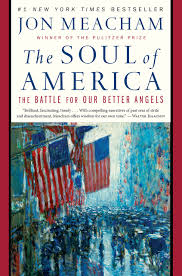
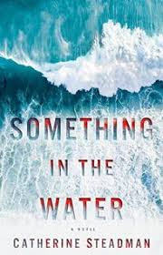
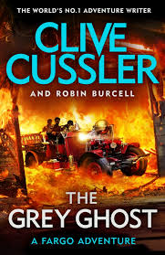
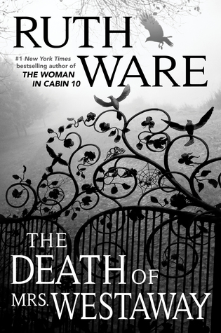

"Reading is to the mind, what exercise is to the body."-Joseph Addison
Welcome to our online store page. Here you can browse a small selection of books that you can buy from us
and that will be delivered to your location. This does not show the breadth of our selection but rather shows an
accurate snapshot of the kind of books that we would be happy for you to purchase.
Online Store List
Girl with the Dragon Tatoo
$7.99
Harriet Vanger, a scion of one of Sweden's wealthiest families disappeared over forty years ago.
All these years later, her aged uncle continues to seek the truth. He hires Mikael Blomkvist,
a crusading journalist recently trapped by a libel conviction, to investigate.
He is aided by the pierced and tattooed punk prodigy Lisbeth Salander.
Together they tap into a vein of unfathomable iniquity and astonishing corruption.
By Stieg Larsson

Never Go Back
$7.99
Former military cop Jack Reacher makes it all the way from snowbound South Dakota to his destination in
northeastern Virginia, near Washington, D.C.: the headquarters of his old unit, the 110th MP.
The old stone building is the closest thing to a home he ever had.
Reacher is there to meet—in person—the new commanding officer, Major Susan Turner,
so far just a warm, intriguing voice on the phone.
But it isn’t Turner behind the CO’s desk. And Reacher is hit with two pieces of shocking news,
one with serious criminal consequences, and one too personal to even think about.
When threatened, you can run or fight.
Reacher fights, aiming to find Turner and clear his name, barely a step ahead of the army, and the FBI,
and the D.C. Metro police, and four unidentified thugs.
Combining an intricate puzzle of a plot and an exciting chase for truth and justice,
Lee Child puts Reacher through his paces—and makes him question who he is, what he’s done,
and the very future of his untethered life on the open road.
By Lee Child

Best Served Cold
$13.99
There have been nineteen years of blood. The ruthless Grand Duke Orso is locked in a vicious struggle with
the squabbling League of Eight, and between them they have bled the land white. While armies march, heads roll and
cities burn, and behind the scenes bankers, priests and older, darker powers play a deadly game to
choose who will be king.
War may be hell but for Monza Murcatto, the Snake of Talins, the most feared and famous mercenary in Duke Orso's employ,
it's a damn good way of making money too. Her victories have made her popular -
a shade too popular for her employer's taste. Betrayed, thrown down a mountain and left for dead, Murcatto's reward
is a broken body and a burning hunger for vengeance. Whatever the cost, seven men must die.
Her allies include Styria's least reliable drunkard, Styria's most treacherous poisoner, a mass-murderer
obsessed with numbers and a Northman who just wants to do the right thing.
Her enemies number the better half of the nation. And that's all before the most dangerous
man in the world is dispatched to hunt her down and finish the job Duke Orso started...
Springtime in Styria. And that means revenge.
by Joe Abercrombie
Cronkite
$19.99
Douglas Brinkley presents the definitive, revealing biography of an American legend: renowned news anchor
Walter Cronkite.
An acclaimed author and historian, Brinkley has drawn upon recently disclosed letters, diaries,
and other artifacts at the recently opened Cronkite Archive to bring detail and depth to this deeply personal portrait.
He also interviewed nearly two hundred of Cronkite’s closest friends and colleagues,
including Andy Rooney, Leslie Stahl, Barbara Walters, Dan Rather, Brian Williams, Les Moonves,
Christiane Amanpour, Katie Couric, Bob Schieffer, Ted Turner, Jimmy Buffett, and Morley Safer,
using their voices to instill dignity and humanity in this study of one of
America’s most beloved and trusted public figures.
By Douglas Brinkley

50 Shades of Grey
$9.99
When literature student Anastasia Steele goes to interview young entrepreneur Christian Grey,
she encounters a man who is beautiful, brilliant, and intimidating. The unworldly, innocent Ana is
startled to realize she wants this man and, despite his enigmatic reserve, finds she is desperate
to get close to him. Unable to resist Ana’s quiet beauty, wit, and independent spirit,
Grey admits he wants her, too—but on his own terms.
Shocked yet thrilled by Grey’s singular erotic tastes, Ana hesitates.
For all the trappings of success—his multinational businesses, his vast wealth,
his loving family—Grey is a man tormented by demons and consumed by the need to control.
When the couple embarks on a daring, passionately physical affair,
Ana discovers Christian Grey’s secrets and explores her own dark desires.
This book is intended for mature audiences.
By E. L. James

The President is Missing
$17.99
The President Is Missing confronts a threat so huge that it jeopardizes not just Pennsylvania Avenue
and Wall Street, but all of America. Uncertainty and fear grip the nation.
There are whispers of cyberterror and espionage and a traitor in the Cabinet.
Even the President himself becomes a suspect, and then he disappears from public view . . .
Set over the course of three days, The President Is Missing sheds a stunning light upon
the inner workings and vulnerabilities of our nation. Filled with information
that only a former Commander-in-Chief could know, this is the most authentic,
terrifying novel to come along in many years.
By Bill Clinton and James Patterson

Shelter in Place
$14.99
It was a typical evening at a mall outside Portland, Maine. Three teenage friends waited for the movie to start.
A boy flirted with the girl selling sunglasses. Mothers and children shopped together,
and the manager at video game store tended to customers. Then the shooters arrived.
The chaos and carnage lasted only eight minutes before the killers were taken down.
But for those who lived through it, the effects would last forever. In the years that followed,
one would dedicate himself to a law enforcement career. Another would close herself off, trying to bury
the memory of huddling in a ladies' room, helplessly clutching her cell phone--until she finally found
a way to pour her emotions into her art.
But one person wasn't satisfied with the shockingly high death toll at the DownEast Mall.
And as the survivors slowly heal, find shelter, and rebuild, they will discover that another conspirator
is lying in wait--and this time, there might be nowhere safe to hide.
By Nora Roberts

The Soul of America
$17.99
Our current climate of partisan fury is not new, and in The Soul of America Meacham shows us how what
Abraham Lincoln called the “better angels of our nature” have repeatedly won the day.
Painting surprising portraits of Lincoln and other presidents, including Ulysses S. Grant,
Theodore Roosevelt, Woodrow Wilson, Franklin D. Roosevelt, Harry S. Truman, Dwight Eisenhower,
and Lyndon B. Johnson, and illuminating the courage of such influential citizen activists as
Martin Luther King, Jr., early suffragettes Alice Paul and Carrie Chapman Catt, civil rights pioneers
Rosa Parks and John Lewis, First Lady Eleanor Roosevelt, and Army-McCarthy hearings lawyer
Joseph N. Welch, Meacham brings vividly to life turning points in American history.
He writes about the Civil War, Reconstruction, and the birth of the Lost Cause;
the backlash against immigrants in the First World War and the resurgence of the Ku Klux Klan
in the 1920s; the fight for women’s rights; the demagoguery of Huey Long and Father Coughlin
and the isolationist work of America First in the years before World War II; the anti-Communist
witch-hunts led by Senator Joseph McCarthy; and Lyndon Johnson’s crusade against Jim Crow.
Each of these dramatic hours in our national life have been shaped by the contest to lead the
country to look forward rather than back, to assert hope over fear—a struggle that continues even now.
While the American story has not always—or even often—been heroic, we have been sustained by a
belief in progress even in the gloomiest of times. In this inspiring book, Meacham reassures us,
“The good news is that we have come through such darkness before”—as, time and again,
Lincoln’s better angels have found a way to prevail.
By Jon Meacham
The Fallen
$14.99
Something sinister is going on in Baronville. The rust belt town has seen four bizarre murders in the
space of two weeks. Cryptic clues left at the scenes--obscure bible verses, odd symbols--have the police stumped.
Amos Decker and his FBI colleague Alex Jamison are in Baronville visiting Alex's sister and her family.
It's a bleak place: a former mill and mining town with a crumbling economy and rampant opioid addiction.
Decker has only been there a few hours when he stumbles on a horrific double murder scene.
Then the next killing hits sickeningly close to home. And with the lives of people he cares about
suddenly hanging in the balance, Decker begins to realize that the recent string of deaths may be only
one small piece of a much larger scheme--with consequences that will reach far beyond Baronville.
Decker, with his singular talents, may be the only one who can crack this bizarre case.
Only this time--when one mistake could cost him everything--Decker finds that his previously
infallible memory may not be so trustworthy after all...
By David Baldacci

Something in the Water
$13.99
If you could make one simple choice that would change your life forever, would you?
Erin is a documentary filmmaker on the brink of a professional breakthrough, Mark a handsome investment
banker with big plans. Passionately in love, they embark on a dream honeymoon to the tropical
island of Bora Bora, where they enjoy the sun, the sand, and each other.
Then, while scuba diving in the crystal blue sea, they find something in the water. . . .
Could the life of your dreams be the stuff of nightmares?
Suddenly the newlyweds must make a dangerous choice: to speak out or to protect their secret.
After all, if no one else knows, who would be hurt? Their decision will trigger a devastating chain of events. . . .
Have you ever wondered how long it takes to dig a grave?
Wonder no longer. Catherine Steadman’s enthralling voice shines throughout this spellbinding debut novel.
With piercing insight and fascinating twists, Something in the Water challenges the reader to confront
the hopes we desperately cling to, the ideals we’re tempted to abandon, and the perfect lies we tell ourselves.
By Catherine Steadman

The Grey Ghost
$13.99
In 1906, a groundbreaking Rolls-Royce prototype known as the Gray Ghost vanishes from the streets of
Manchester, England, and it is only the lucky intervention of an American detective named Isaac Bell
that prevents it from being lost forever. Not even he can save the good name of Jonathan Payton,
however, the man wrongly blamed for the theft, and more than a hundred years later, it is his grandson
who turns to Sam and Remi Fargo to help prove his grandfather's innocence.
But there is even more at stake than any of them know. For the car has vanished again, and in it is
an object so rare that it has the capacity to change lives. Men with everything to gain and a great deal
to lose have a desperate plan to find it--and if anybody gets in their way? They have a plan for that, too.
By Clive Cussler and Robin Burcell

The Death of Mrs. Westaway
$12.99
On a day that begins like any other, Hal receives a mysterious letter bequeathing her a substantial inheritance.
She realizes very quickly that the letter was sent to the wrong person—but also that the cold-reading skills
she’s honed as a tarot card reader might help her claim the money.
Soon, Hal finds herself at the funeral of the deceased…where it dawns on her that there is something
very, very wrong about this strange situation and the inheritance at the center of it.
Full of spellbinding menace and told in Ruth Ware’s signature suspenseful style,
this is an unputdownable thriller from the Agatha Christie of our time.